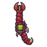

แมงป่องแดง
มอนธาตุไฟ Lv 57–79
เจอที่
| แมพ | โซน | Lv | ภูมิภาค |
|---|---|---|---|
| ผาหินแดง | 66–72 | แดนใต้สีแดง | |
| ภูเขาไฟหลับ | 74–79 | แดนใต้สีแดง | |
| รางร่อนทองร้าง | 57–78 | แดนใต้สีแดง | |
| รางร่อนทองร้าง | รางน้ำไม้ยักษ์ | 71–78 | แดนใต้สีแดง |
| หุบเสาหินทราย | 57–78 | แดนใต้สีแดง | |
| หุบเสาหินทราย | ดงเสาหินทราย | 71–78 | แดนใต้สีแดง |
ค่าสถานะตามเลเวล
| Lv | HP | ATK | DEF | MDEF | EXP | Job |
|---|---|---|---|---|---|---|
| 57 | 17,352 | 126–189 | 30 | 10 | 72 | 54 |
| 68 | 28,507 | 154–231 | 35 | 12 | 85 | 64 |
| 79 | 43,648 | 186–279 | 41 | 14 | 97 | 73 |
ตีด้วยธาตุไหนดี
แรงขึ้น: น้ำ ×1.5 พิษ ×1.25
เบาลง: ดิน ×0.5 ไฟ ×0.25
วัตถุดิบที่ดรอป
| ของ | โอกาส | |
|---|---|---|
| เหล็กในแมงป่อง | 55% | 1 ชิ้น (15% ได้ 2) |
อุปกรณ์ที่ดรอป (10)
| ของ | โอกาส |
|---|---|
| 0.12% | |
| เครื่องดนตรีแมงป่องแดง | 0.12% |
| คาทาร์ก้ามแมงป่อง | 0.12% |
| 0.12% | |
 ปืนพกคู่ก้ามแมงป่อง | 0.12% |
| แส้หางแมงป่อง | 0.12% |
| 0.12% | |
| 0.06% | |
| 0.06% | |
| ดาบหางแมงป่อง | 0.06% |
สกิล
หนามสะท้อน (Lv 25+) · หนามสะท้อน (Lv 60+) · ยิงไกล (Lv 60+)